地政学
モスクワは内陸国家ロシアの政治中枢であり、クレムリン、外務、防衛、鉄道結節、空港群が一体で国土を束ねる。東西南北の回廊を管理する首都として、欧州、中央アジア、北極圏、黒海方面への視線が交差する場である。

🇷🇺 ロシア / ヨーロッパ / World City Atlas
国家権力、放射環状の都市骨格、正教とソ連記憶、冬の気候が重なるロシア最大の首都圏。
都市の骨格
クレムリンを中心に放射状の幹線と環状道路、鉄道、地下鉄が重なり、政治権力と日常移動を同じ地図に刻む。
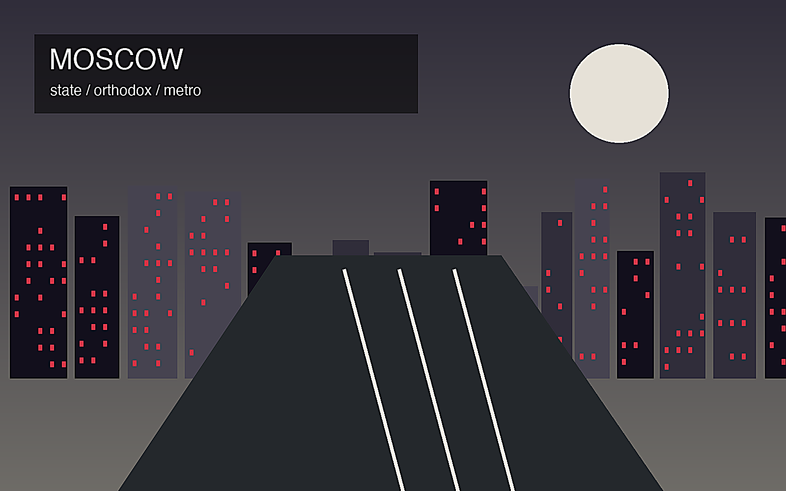
モスクワは内陸国家ロシアの政治中枢であり、クレムリン、外務、防衛、鉄道結節、空港群が一体で国土を束ねる。東西南北の回廊を管理する首都として、欧州、中央アジア、北極圏、黒海方面への視線が交差する場である。
行政、エネルギー企業、金融、IT、軍需、大学、メディアが集中し、雇用は高所得専門職から建設、清掃、物流、警備まで幅広い。制裁下では輸入代替、決済、研究開発、人材流出が都市経済の課題として浮かび上がる。
ロシア正教の聖堂、劇場、美術館、文学の記憶、ソ連期の記念碑が重なり、都市は帝国、革命、戦争、現代国家を同時に語る。宗教儀礼と国家式典は近く、文化は市民生活と権力表象の双方を支える場所である大首都。
地下鉄、郊外団地、河岸公園、商業施設、市場が日常を支え、観光客は赤の広場、クレムリン、劇場、聖堂を巡る。豊かな中心部と遠い通勤圏、移民労働、冬の寒さ、監視と統制の緊張も都市の実感を形づくる首都だ。
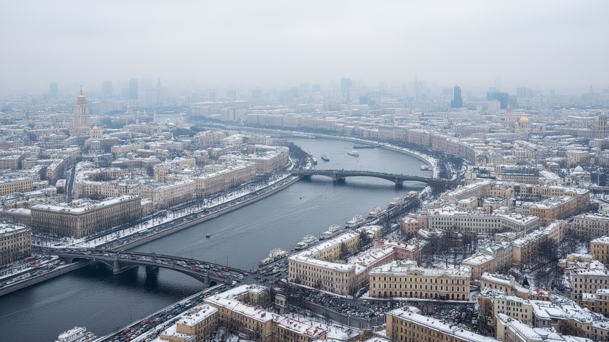
モスクワは海港都市ではなく、内陸の高台とモスクワ川の湾曲、鉄道、道路、地下鉄によって成長した首都である。中心にはクレムリンと赤の広場があり、そこから放射状の道路が郊外へ伸び、複数の環状道路が都市を輪のように囲む。鉄道駅は方角ごとに国土の別々の地域へ向かい、空港群は欧州、シベリア、コーカサス、中央アジアへの移動を担う。川は大河ではないが、河岸の再整備、公園、橋、倉庫跡、政府施設を結び、都市の記憶を読み取る線になる。放射環状の構造は単なる交通計画ではなく、中央へ向かう政治と行政の重心を可視化している。郊外の住宅団地から中心業務地区へ通う人びとは、地下鉄と近郊鉄道を乗り継ぎ、巨大首都の日常的な距離を体で測る。道路混雑、冬の雪、河川沿いの開発、緑地の保全は、成長した都市圏が抱える管理課題である。モスクワを見るには、華やかな中心だけでなく、環状道路の外側に広がる通勤圏と物流の動きを合わせて追う必要がある。環状道路の外側には倉庫、工場跡、新しい集合住宅、郊外型商業施設が点在し、中心へ集まる人と物の流れを受け止める。川沿いの遊歩道が観光的に整えられる一方で、橋や幹線道路は軍事、行政、物流の動脈でもあり、都市の美しさと管理の強さを同時に示している。都市の形そのものが、中央集権と広大な国土を結ぶ首都の性格を語っている。
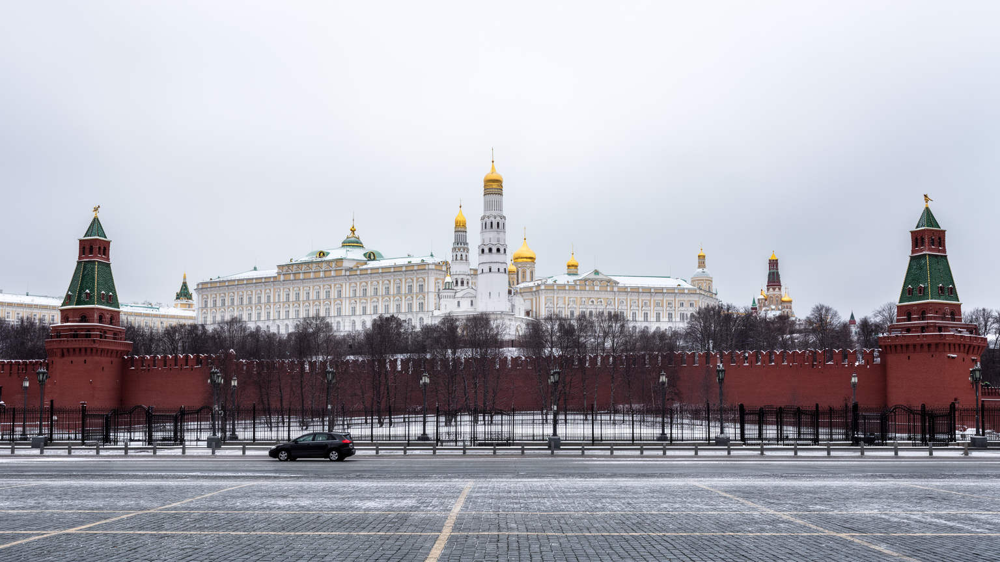
モスクワの中心性は市場規模だけでなく、国家の意思決定が集中することから生まれる。大統領府、政府機関、省庁、議会、裁判所、国営企業、主要メディアが近い距離に集まり、政策、予算、法制度、安全保障、外交の判断が都市の空気を左右する。クレムリンと赤の広場は観光名所であると同時に、国家儀礼、軍事パレード、追悼、祝祭の舞台でもある。権力の近さは投資や雇用を呼び込むが、政治的な発言、報道、市民運動に対する制約も強める。中心部の再整備や歴史的景観の保存は、都市美化であると同時に、どの時代の記憶を公式に前面へ出すのかという選択を含む。国家中枢の街では、警備、交通規制、監視、式典が日常の動線に入り込み、住民と訪問者は権力の存在を物理的に感じる。モスクワを首都として読むことは、建物の豪華さを見るだけでなく、行政が人びとの移動、情報、集会、仕事にどう触れているかを読むことである。都市は権力を収容する容器であり、同時に権力の演出装置でもある。国家機関に近い企業や大学、文化機関は資金や許認可の利点を受ける一方、政治判断の変化を直接受けやすい。広場の使われ方、警備車両の配置、祝日の装飾までが、首都では政治的な意味を帯びる。中心へ近づくほど歴史と行政が濃くなり、日常の街歩きにも国家の視線が入り込む構造だと分かる街だ。
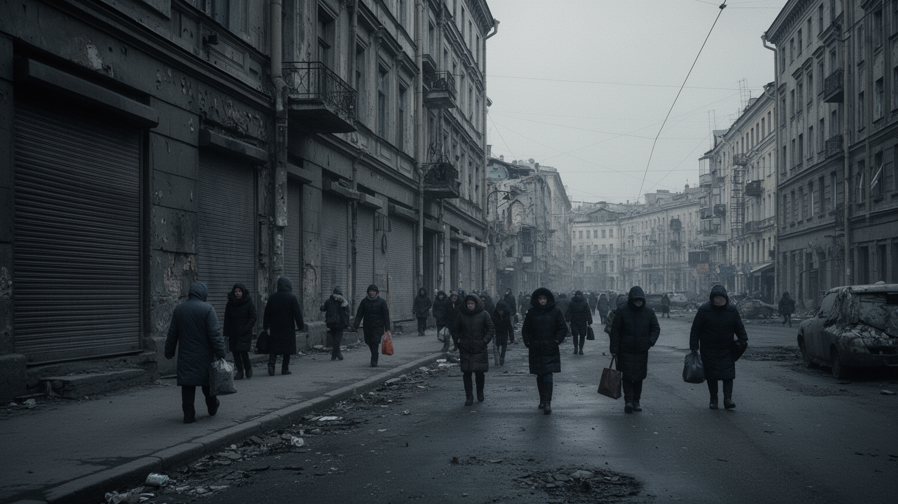
近年の戦争と国際制裁は、モスクワの経済、文化、移動、情報環境を大きく変えている。海外企業の撤退、航空路の制限、金融決済の迂回、輸入品の不足、価格上昇は、中心部の店舗や企業活動だけでなく、家計の買い物にも波及する。一方で、国家発注、防衛関連、輸入代替、国内ブランド、友好国との取引は新しい需要を生み、都市の仕事を別の方向へ動かしている。徴兵、戦死者、避難や移住、反戦的な発言への圧力は、家族や職場、大学、文化機関に静かな緊張をもたらす。表向きの街路が整って見えても、情報の選択肢、移動の自由、将来設計は以前より狭く感じられる人もいる。制裁は都市を一気に止めるのではなく、部品調達、研究協力、旅行、留学、金融、医薬品、文化交流を少しずつ難しくする。モスクワの強さは国家資金と巨大市場に支えられるが、外部との接続が細るほど、専門人材の流出や技術更新の遅れが重くなる。戦争を遠い前線の出来事としてではなく、首都の日常に入り込む制度、価格、沈黙として見ることが必要である。国外へ出た人の不在は研究室、IT企業、報道機関、芸術団体に残り、残った人びとは家庭や職場で言葉を選ぶ。広告や商品棚が埋まっていても、選択肢の質と自由は以前と同じではない。平穏に見える大都市の表面ほど、家族単位の不安や将来計画の変更を隠している。
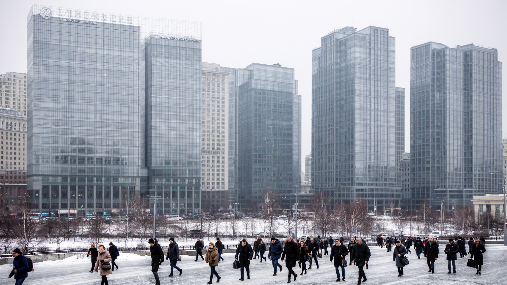
モスクワの富は、周辺で掘られる資源ではなく、国土各地の石油、天然ガス、鉱物、電力、鉄道、通信、金融を管理する本社機能によって集まる。エネルギー企業、国営銀行、保険、証券、法律、会計、コンサルティング、IT企業が首都に集中し、資源収入を都市のオフィス、住宅、商業、文化へ変換する。高賃金の専門職は中心部の消費を押し上げ、レストラン、教育、医療、不動産市場を厚くする。一方で、制裁下の金融は外貨決済、投資、海外調達で制約を受け、国内市場や友好国との取引に重心を移す。エネルギー依存は財政を支える力であると同時に、価格変動、脱炭素、地政学リスクに左右される弱さでもある。首都のオフィス街だけを見ると高度なサービス経済が目立つが、その背後には遠い油田、パイプライン、港、鉄道、労働者の生活がある。モスクワは資源を持つ地方を管理し、そこから生まれる富を配分する都市でもある。豊かさの集中は公共投資を可能にする一方、地方との格差や中心部の住宅費を広げるため、経済力は社会的な緊張も伴っている。金融や能源企業の役員、官僚、技術者が近い距離で動くことは政策の速度を上げるが、競争より関係性が重視される不透明さも生む。都市の豪華さは、資源経済の恩恵と限界を同時に映している。資源の価格が変われば、遠い産地だけでなく首都の雇用、税収、消費にも波が届く。
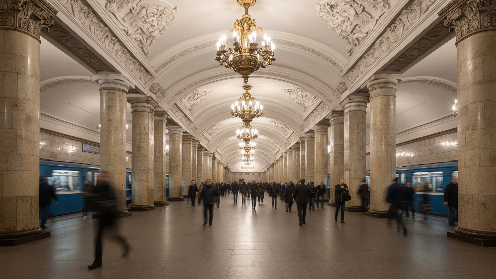
モスクワ地下鉄は、移動手段であると同時に都市の象徴である。宮殿のような駅、戦時下の避難空間としての記憶、社会主義の装飾、現代的な新線が重なり、地下の空間だけで都市の歴史を歩ける。地上では環状道路と放射状道路が混み合うため、地下鉄、近郊鉄道、バス、トラム、配車サービスは膨大な通勤を支える基盤になる。新しい環状線や郊外への延伸は、遠い住宅団地から中心部への時間を短くし、商業施設や住宅開発を誘導する。冬の寒さや雪の日には、駅の近さが生活の便利さを大きく左右する。豪華な駅空間は観光客を引きつけるが、通勤者にとっては乗換え、混雑、エスカレーター、改札、警備、広告が毎日の風景である。交通網の発達は都市の一体性を高める一方、中心へ依存する働き方を強め、遠距離通勤の疲労も生む。地下鉄の運行が正確であるほど、都市は広がることができる。モスクワの移動を読むには、駅の美しさと同じくらい、郊外の団地、職場、学校、病院を結ぶ日常の時間を見なければならない。交通カード、監視カメラ、警備員、広告は便利さと管理を同時に示す。夜遅くまで動く列車は文化施設や飲食店を支えるが、混雑した車内では所得、年齢、移民、観光客が同じ都市のリズムに押し込まれる。移動の効率は自由を広げるが、同時に巨大な都市をさらに外へ広げる力にもなる。
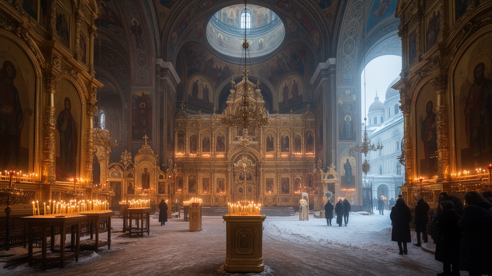
モスクワの宗教景観では、ロシア正教の聖堂、修道院、鐘楼、イコン、祭礼が大きな存在感を持つ。帝政期の信仰、ソ連期の弾圧と世俗化、現代の復興と国家との接近が重なり、聖堂は祈りの場であると同時に歴史認識をめぐる象徴にもなる。復活した教会や新しく建てられた聖堂は、都市のスカイラインと公共空間に宗教的な記号を戻している。信者は洗礼、結婚、葬儀、復活祭、クリスマス、聖人祭を通じて共同体をつくり、教会は慈善や教育にも関わる。一方で、イスラム教徒、ユダヤ教徒、仏教徒、無宗教の人びともモスクワに暮らし、多宗教都市としての調整も必要である。正教は文化遺産として観光化されるだけでなく、政治的な言説や道徳教育にも影響を持つ。信仰の復興は失われた記憶を取り戻す行為である一方、国家的な一体感を強める道具として使われることもある。聖堂の金色のドームを眺める時、その美しさの背後に、帝国、革命、戦争、弾圧、再建の時間が折り重なっていることを意識する必要がある。礼拝に向かう人、観光客、警備員、近隣住民が同じ境内を通ることで、聖なる空間は日常の都市空間にもなる。宗教の近さは慰めであると同時に、国家が価値観を示す舞台にもなる。祈りの言葉と政治的な言葉が近づく時、聖堂は個人の信仰を超えた公共的な意味を帯びる場所となるのだ今も。
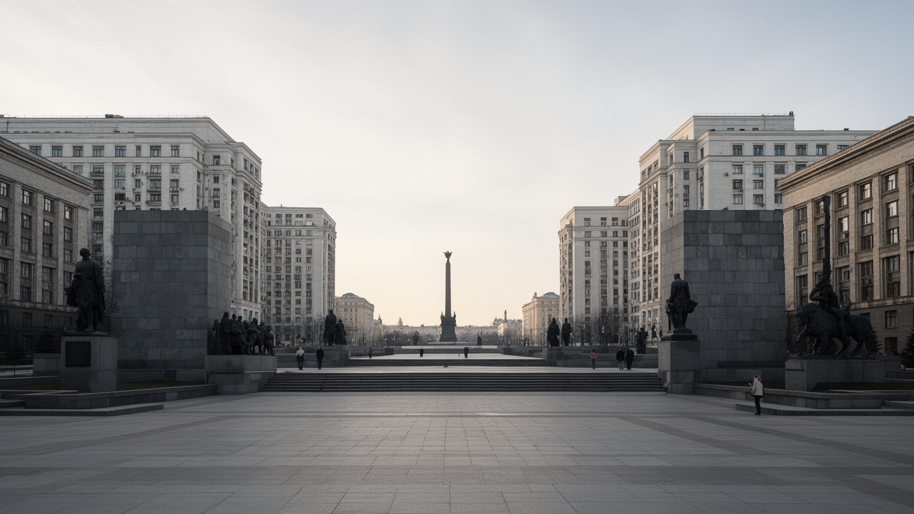
モスクワには、帝政ロシアの都としての記憶だけでなく、革命、社会主義建設、第二次世界大戦、宇宙開発、冷戦の記憶が濃く残る。スターリン様式の高層建築、広い大通り、記念碑、戦勝記念施設、地下鉄の装飾、集合住宅、展示場は、国家が近代化と勝利をどう表現したかを示している。戦争の犠牲と勝利は現在の政治文化でも中心的な物語であり、追悼と愛国教育、軍事儀礼に結びつく。ソ連期の遺産は誇りとして語られる一方、強制収容、粛清、検閲、物資不足、監視社会の記憶を伴う。街を歩くと、華麗な公共建築と無数の団地、英雄像と個人の沈黙が隣り合う。記憶は博物館に閉じ込められているのではなく、学校教育、祝日、映画、テレビ、家族の話、墓地、広場に入り込んでいる。再開発は古い工場や住宅を新しい商業空間へ変えるが、その過程で労働者の歴史や社会主義的な生活の痕跡が薄れることもある。モスクワのソ連記憶は、単純な懐旧でも否定でもなく、現代の国家像と市民の私的な記憶がせめぎ合う場である。家族写真や退役軍人の語り、学校行事、地下鉄駅の装飾は、公式の物語と個人の経験をつないでいる。何を記念し、何を語らないかは、都市の道徳的な地図を形づくる。過去を誇る声と痛みを語る声の不均衡も、首都の広場や博物館の配置に今も表れている現実である。記憶の偏りもまた都市を形づくる。
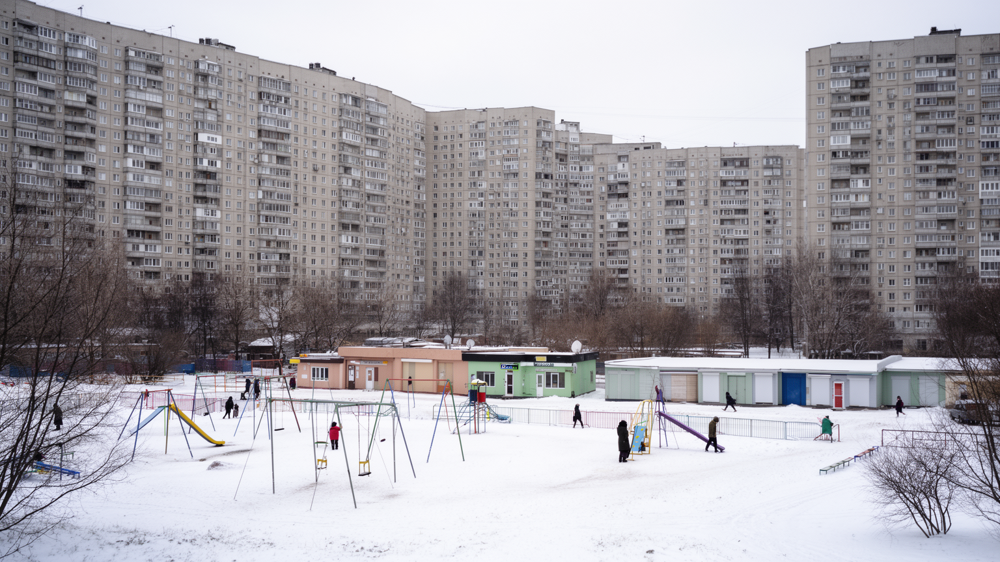
モスクワの生活は、赤の広場や中心業務地区だけでなく、広大な郊外団地と新興住宅地によって支えられている。ソ連期の集合住宅は、標準化された間取り、学校、商店、診療所、緑地を組み合わせ、労働者家族の生活単位をつくった。現在は古い団地の更新、高層住宅の建設、郊外鉄道沿線の開発、商業施設の増加が進み、住民の選択肢は広がる一方、通勤距離や住宅費の負担も増している。中心部の再開発で地価が上がるほど、若い家族や移民労働者は外側へ押し出されやすい。団地の中庭、遊び場、食料品店、薬局、学校への道は、都市の統計では見えにくい日常の基盤である。老朽化した建物では断熱、配管、エレベーター、冬の暖房が生活の質を左右し、更新事業は立ち退きや地域のつながりにも影響する。郊外は単なる寝床ではなく、地域市場、教会、モスク、職場、小さなサービス業が育つ生活圏である。モスクワを理解するには、中心の権力景観と郊外の長い通勤、住宅政策、所得差を同時に見る必要がある。新しい高層住宅は快適さを売り物にするが、学校や診療所、道路が追いつかない地域では生活の不便が残る。住宅の質は世代間の資産差を生み、誰が中心近くに住めるのかという階層の境界を示している。中庭のベンチや小さな商店は、巨大都市の中で住民が顔見知りの生活を保つ大切な場所でもある。
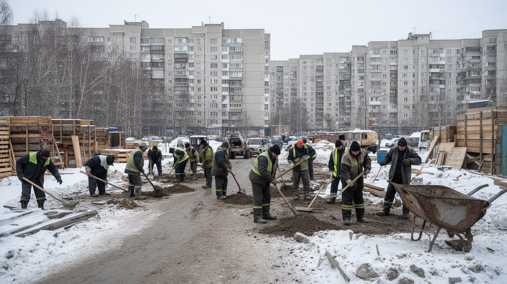
モスクワの建設現場、清掃、配送、警備、飲食、市場、住宅管理には、中央アジアやコーカサス、ロシア国内の地方から来た多くの労働者が関わっている。巨大都市の成長は高所得専門職だけでは成り立たず、低賃金で不安定な仕事が道路、住宅、商業施設、公共空間を動かしている。移民労働者は送金によって出身地の家族を支え、休日には市場、礼拝所、食堂、公園に小さな共同体をつくる。一方で、登録、滞在資格、警察の検問、雇用主への依存、賃金未払い、差別、民族的な偏見は深刻な問題である。社会不安や治安事件が起きると、移民全体への圧力が強まり、都市を支える人びとが可視化されるのはしばしば危機の時である。イスラム教徒の労働者が多いことは、正教中心に見える首都の宗教地図を多層化している。市場の食材、建設現場の音、深夜の配送、雪かきの作業は、モスクワが多民族都市であることを日々示す。豊かな中心部の快適さを評価するなら、それを保つ労働条件、住環境、法的保護を同じ地図に置かなければならない。言語の違いは学校、医療、役所の手続きで壁になり、子どもの教育や家族帯同の可否にも影響する。都市が彼らを労働力としてだけ扱うほど、公共空間の中に見えない境界が増えていく。移民の暮らしを読むことは、首都の便利さが誰の不安定な時間に支えられているかを問うことでもある。
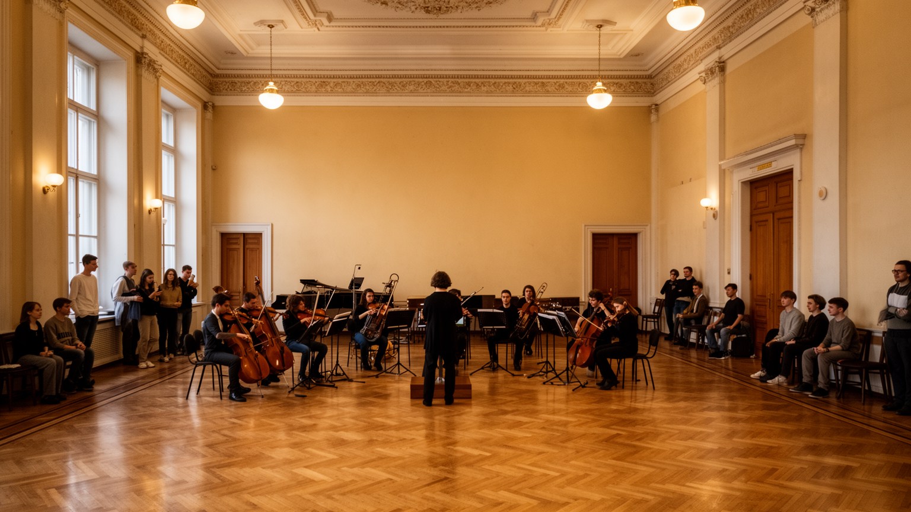
モスクワは政治と金融の街であるだけでなく、劇場、音楽院、美術館、映画、文学、大学、研究機関が集まる知的な首都でもある。ボリショイ劇場、トレチャコフ美術館、文学ゆかりの街区、大学キャンパス、科学研究所は、ロシア文化の国際的な顔をつくってきた。学生や研究者、俳優、音楽家、出版関係者、映像制作者は、国家機関や市場の近くで仕事をしながら、検閲、資金、国際交流の制約とも向き合う。戦争と制裁は共同研究、留学、展示、映画配給、音楽公演に影響し、都市の文化的な開放性を揺さぶる。とはいえ、読書会、小劇場、現代美術、独立系の音楽、オンライン教育など、公式文化だけではない活動も続いている。教育の集中は若者を地方から引き寄せ、卒業後の雇用や住宅需要を生む一方、首都と地方の機会格差を広げる。モスクワの文化は豪華な劇場の客席だけでなく、学生寮、図書館、リハーサル室、出版社、カフェで育つ。権力に近い都市で芸術がどのように自由を確保し、どこで沈黙を選ぶのかを見ることは、首都の精神的な輪郭を読むことでもある。大学と研究機関は理工系人材を集め、防衛、宇宙、通信、医療の産業とも結びつく。才能が集中するほど創造性は増すが、移住や検閲で失われる人材の重みも大きい。文化の厚みは首都の柔らかな力であり、政治の硬さと隣り合って都市を支えている。
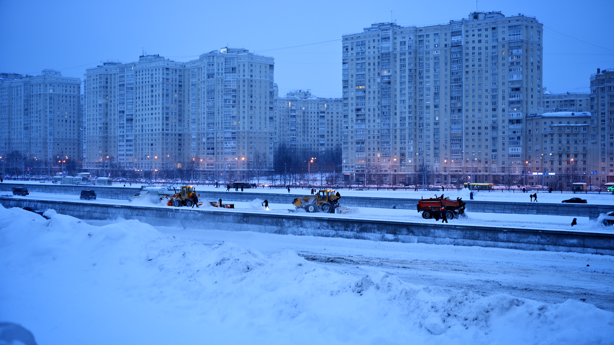
モスクワの気候は湿潤大陸性で、冬は長く寒く、雪と凍結が交通、住宅、労働、観光に影響する。暖房網、除雪、地下道、厚い衣服、屋内商業施設、地下鉄の近さは、寒冷都市で暮らすための基本的なインフラである。寒さは都市を止めるだけではなく、冬の市場、スケート、イルミネーション、劇場通い、温かい料理といった季節の文化もつくる。一方で、屋外労働者、低所得世帯、高齢者、古い住宅に住む人にとっては、暖房費、滑りやすい歩道、長い通勤が大きな負担になる。夏は短いが湿度と暑さが増し、近年は熱波や豪雨、森林火災の煙も都市生活のリスクとして意識される。河岸公園や街路樹、緑地の整備は余暇だけでなく、暑熱と排水を和らげる役割を持つ。冬を前提にした都市管理は、道路の舗装、建物の断熱、公共交通の運行、学校や病院の計画に深く入り込む。モスクワの景観は雪で美しく変わるが、その美しさは除雪作業員、技術者、交通職員、住民の日々の備えによって保たれている。気候は背景ではなく、都市の社会的な公平さを試す条件である。暖房の安定は国家と自治体への信頼にも関わり、停電や配管事故は寒冷地では命の問題になる。季節の変化は観光の表情を変えるだけでなく、都市を維持する労働の重さを際立たせる。寒さへの備えが整う地域とそうでない地域の差は、冬になるほどはっきり見える。
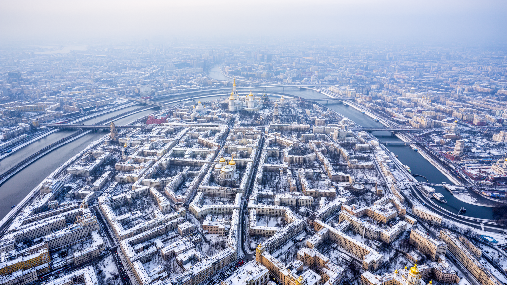
モスクワは、経済規模、人口、観光名所だけで説明できる都市ではない。クレムリンを中心にした国家権力、放射環状の都市構造、モスクワ川、鉄道と地下鉄、エネルギー企業と金融、正教の復興、ソ連期の記憶、郊外団地、移民労働、芸術教育、冬の気候、戦争と制裁が重なっている。中心部の壮麗な建築は首都の威信を示すが、その背後では長い通勤、住宅更新、情報統制、所得格差、徴兵への不安、国際的な孤立が日常に影を落とす。観光客にとっては赤の広場や地下鉄駅の美しさが強く残るが、住民にとって都市は仕事、家族、冬の移動、政治的な沈黙、文化への誇りが混ざる生活の場である。モスクワを読むには、権力の象徴を眺めるだけでなく、誰がその都市を掃除し、建て、動かし、語り、何を語れずにいるのかを考える必要がある。帝国、革命、戦争、資源経済、現代の管理国家が同じ街路に刻まれているため、モスクワはロシアという国の強さと不安を最も濃く映す都市であり続けている。外から見える重厚な首都像と、住民が感じる家賃、通勤、教育、医療、軍事化の圧力には差がある。その差を意識すると、モスクワは威信の舞台であるだけでなく、多くの人が慎重に暮らしを組み立てる複雑な生活圏として立ち上がる。美しい駅や聖堂を歩く時も、その背後にある不平等、沈黙、労働、冬の負担を忘れない視点が必要である。